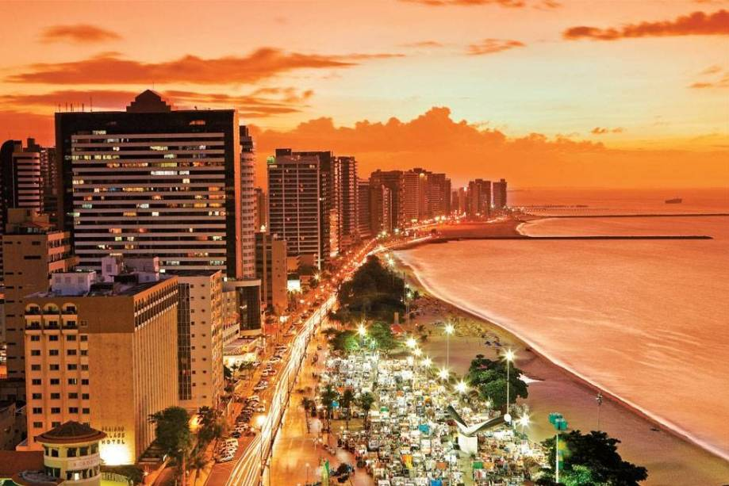

Geoinfos
Informações técnicas sobre relevo, população, IDH etc.
| INFORMAÇÕES | |
|---|---|
| Municípios limítrofes | Caucaia, Maracanaú, Pacatuba, Itaitinga, Eusébio e Aquiraz |
| Fundação | 13 de abril de 1726 (295 anos) |
| Clima | tropical semi-úmido (As)[3] |
| IDH | 0,754 — alto |
| PIB | R$ 25 356,73 |
| INFORMAÇÕES TERRITÓRIAIS | |
|---|---|
| Número de habitantes | 2 669 342 habitantes |
| Superfície de Fortaleza |
31 493 hectares
314,93 km² (121,60 sq mi) |
| Densidade populacional | 8 476,0 ha./km² |
| Altitude de Fortaleza | 14 metros de altitude |
| Coordenadas geográficas decimais |
Latitude:
-3.71839
Longitude: -38.5434 |
| Coordenadas geográficas sexagesimais | Latitude: 3° 43' 6'' Sul , Longitude: 38° 32' 36'' Oeste |
| INFORMAÇÕES DO MUNICÍPIO | ||
|---|---|---|
| Endereço da Prefeitura Municipal de Fortaleza |
Fortaleza
Prefeitura de Fortaleza
Rua São José, 1 FORTALEZA - CE, 60060-170 Brasil Work +55 85 3105-1369 Fax +55 85 3255-8317 |
|
| Telefone da prefeitura |
(85) 3105-1369
Internacional: +55 85 3105-1369 |
|
| Fax |
(85) 3255-8317
Internacional: +55 85 3255-8317 |
|
| Endereço electrónicoda prefeitura |
A carregar...
|
|
| Site oficial do município | fortaleza.ce.gov.br | |
| INFORMAÇÕES DO ADMINISTRATIVAS | ||
|---|---|---|
| Prefeito de Fortaleza | JOSÉ SARTO NOGUEIRA MOREIRA | |
| Partido politico | PDT | |
| INFORMAÇÕES DE TRANSPORTE | |
|---|---|
| Transporte urbano disponível | Metropolitano, Sistema de partilha de bicicletas (Bicicletar) |
| Aeroporto |
Aeroporto Internacional Pinto Martins
Aeroporto de Sobral
199.4 km
Aeroporto Dix-Sept Rosado
210.7 km
|
| INFORMAÇÕES DE DISTÂNCIA A OUTRAS CIDADES | ||
|---|---|---|
| São Paulo : 2373 km | Rio de Janeiro : 2194 km | Brasília : 1691 km |
| Salvador : 1030 km | Belo Horizonte : 1886 km | Manaus : 2388 km |
| Curitiba : 2675 km | Recife : 630 km mais perto | Goiânia : 1858 km |
| Belém : 1136 km | Porto Alegre : 3219 km | Guarulhos : 2351 km |
| Campinas : 2325 km | São Luís : 654 km | São Gonçalo : 2182 km |
| Distância calculada em linha reta! | ||
História
Conheça mais sobre a história da FORTALEZA.
História
Capitania dependente, o Ceará teve a sua formação econômica iniciada no século XVII com a pecuária, para
fornecer carne e tração à economia açucareira estabelecida na Zona da Mata. E Fortaleza, fundada em 13 de
abril de 1726, ficou à margem.
Nessa fase, a cidade primaz era Aracati. Icó, Sobral e Crato também ocupavam o primeiro nível na hierarquia
urbana no final do século XVIII.
Ao contrário de Aracati, de Icó e de outras vilas setecentistas fundadas nas picadas das boiadas, Fortaleza
achava-se longe dos principais sistemas hidrográficos cearenses – as bacias dos rios Jaguaribe e Acaraú – e,
portanto, à margem da atividade criatória, ausente dos caminhos por onde a economia fluía no território. Por
todos os setecentos, a vila não despertou grandes interesses do Reino, não tendo desenvolvido qualquer
atividade terciária.
Mas, em 1799, coincidindo com o declínio da pecuária (a Seca Grande de 1790-1793 liquidou com a atividade), a
Capitania tornou-se autônoma, passando a fazer comércio direto com Lisboa, através, preferencialmente, de
Fortaleza, que se torna a capital.
De 1808 em diante, com a abertura dos portos, o intercâmbio estendeu-se às nações amigas e, em especial, à
Inglaterra, para onde o Ceará fez, em 1809, a primeira exportação direta de algodão.
Como capitania autônoma, o Ceará ingressava então na economia agroexportadora. O viajante inglês Henry Koster,
que, exatamente nessa época (1810), visitou Fortaleza, não a enxergava com otimismo: “Não obstante a má
impressão geral, pela pobreza do solo em que esta Vila está situada, confesso ter ela boa aparência, embora
escassamente possa este ser o estado real dessa terra. A dificuldade de transportes (...), e falta de um
porto, as terríveis secas, [todos esses fatores] afastam algumas ousadas esperanças no desenvolvimento da sua
prosperidade”.
Em 1822, com o Brasil independente, o Ceará passou a província; no ano seguinte, a vila de Fortaleza foi
elevada a cidade, o que robusteceu o seu papel primaz, dentro já da política de centralização do Império. As
propriedades agropecuárias da província, a principal riqueza de então, pertenciam a pouco mais de 1% da
população livre. Dado que a Lei de Terras, de 1850, só fez contribuir para a concentração fundiária, estavam
fincadas então as bases das desigualdades de renda e riqueza que, embora em menor proporção, observam-se até
os dias atuais no Ceará e em Fortaleza.
Formação Administrativa:
Distrito criado com a denominação de Fortaleza, por provisão de 06-08-1761.
Elevado à categoria de vila com a denominação de Fortaleza, por Ordem Régia de 13-02-1699. Sede no núcleo de
Fortaleza. Constituído do distrito sede. Instalado em 1700.
Em 1701, é transferida a sede do núcleo Fortaleza para Barra do Ceará, lugar que teve posteriormente a
denominação de Vila Velha, mas volta para Fortaleza em 1706. A sede é mudada novamente para Barra do Ceará,
voltando para Fortaleza em 1708.
Em 1710, a vila de Fortaleza passou a denominar-se São José do Ribamar do Aquiraz.
Em 11-03-1711, por Alvará a vila volta a denominar-se Fortaleza.
Pela Ordem Régia de 30-01-1713, é transferida a sede da vila de Fortaleza para Aquiraz.
Elevado à categoria de município com a denominação de Fortaleza, por Resolução Régia de 09-03-1725. Sede no
atual distrito de Fortaleza. Instalado em 13-04-1726.
Elevado à condição de cidade com a denominação de Fortaleza, por Resolução Imperial de 02-01-1823, Decreto
Imperial de 24-02-1823 e Carta Imperial de 17-03-1823, e por este último ato o município de Fortaleza, passou
a denominar-se Fortaleza da Nova Bragança.
Em divisão administrativa referente ao ano de 1911, o município aparece constituído de 2 distritos: Fortaleza
e Patrocínio.
Pelo Decreto Estadual n.º 1.156, de 04-12-1933, são criados os distritos de Messejana e Mondubim. Sob o mesmo
Decreto, o município de Fortaleza adquiriu o extinto município de Porangaba.
Em divisão administrativa referente ao ano de 1933, o município aparece constituído de 7 distritos: Fortaleza,
Alto da Balança, Barro Vermelho, Messejana, Mondubim, Porangaba e Pajuçara. Não figurando o distrito de
Patrocínio.
Pela Lei n.º 226, de 30-11-1936, o distrito de Pajuçara passou a denominar-se Rodolfo Teófilo.
Em divisão territorial datada de 31-XII-1936, o município é constituído de 7 distritos: Fortaleza, Alto da
Balança, Barro Vermelho, Messejana, Mondubim, Porangaba e Roldolfo Teófilo (ex-Pajuçara).
Pela Lei Municipal n.º 79, de 28-06-1937, o distrito de Barro Vermelho passou a denominar-se Antônio Bezerra.
Em divisão territorial datada de 31-XII-1937, o município é constituído de 7 distritos: Fortaleza, Alto da
Balança, Antônio Bezerra (ex-Barro Vermelho), Messejana, Mondubim, Porongaba e Rodolfo Teófilo.
Pelo Decreto Estadual n.º 448, de 20-12-1938, são extintos os distritos de Rodolfo Teófílo, sendo seu
território anexado ao distrito de Maracanaú, do município de Maranguape e Alto Balança, sendo seu território
anexado ao distrito sede de Fortaleza.
No quadro fixado para vigorar no período de 1939-1943, o município é constituído de 5 distritos: Fortaleza,
Antônio Bezerra, Messejana, Mondubim e Porangaba.
Pelo Decreto-lei Estadual n.º 1.114, de 30-12-1943, o distrito de Porangaba passou a denominar-se Parangaba.
Em divisão territorial datada de 1-VII-1960, o município é constituído de 5 distritos: Fortaleza, Antônio
Bezerra, Messejana, Mondubim e Parangaba (ex-Porangaba).
Assim permanecendo em divisão territorial datada de 2020.
Fonte:
Fortaleza (CE). Prefeitura. Disponível em: https://www.fortaleza.ce.gov.br/a-cidade.
Pontos Turísticos
Saiba mais sobre os melhores lugares e o que fazer em FORTALEZA.
_Nome_Ponto

_Nome_Ponto
_Nome_Ponto

Fontes:
font1
font2
font3
font4
font5
Como Chegar?
Veja como chegar nos melhores pontos de FORTALEZA